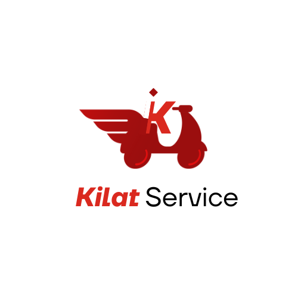

Kilat est une plateforme locale de livraison express pour les objets légers et urgents.
Pensée pour les personnes pressées, elle cible pour l'instant les étudiants et le personnel de Kedge Business School à Marseille.
 Télécharger l'AppKilat vous permet de déléguer les livraisons urgentes tout en respectant l'environnement.
Simple, rapide et efficace, elle assure des courses en temps réel pour des livraisons sans stress.
En favorisant les livraisons locales, Kilat soutient une économie de proximité et réduit l'empreinte carbone.
Optez pour une solution de transport rapide et écologique à portée de main.
Suivez vos livraisons en temps réel et restez informé de l'avancée de votre commande.
Kilat vous apporte tranquillité d'esprit, même lors des urgences les plus pressantes.
Eddy, un étudiant de KEDGE, a oublié sa carte d'identité à l'école.
Avant de prendre son train, il utilise Kilat pour déléguer la récupération de sa carte, et peut suivre la livraison en temps réel, lui permettant de ne pas manquer son train.
Emma, étudiante en marketing, a besoin d'un livre de cours urgent.
Elle découvre que sa librairie locale a le livre en stock, mais elle n’a pas le temps d’y aller avant son cours.
Avec Kilat, elle commande une livraison express.
En quelques minutes, un livreur prend le livre à la librairie et le livre directement à son campus, lui permettant d'assister à son cours sans stress.
Maxime, un jeune entrepreneur, a organisé une réunion importante avec des investisseurs.
Il réalise qu'il a oublié d'acheter des fournitures de bureau essentielles, comme des stylos et des blocs-notes.
En utilisant Kilat, il passe une commande à une papeterie proche.
Un livreur s'occupe de récupérer les articles et de les livrer à son bureau en moins de 30 minutes, garantissant que tout est prêt pour la réunion.
"Kilat a complètement changé ma façon d'aborder les achats quotidiens. C'est incroyable de savoir que je soutiens des entreprises locales tout en réduisant mon impact sur la planète !"
- Sarah T.
"J'adore l'application Kilat ! Elle est si simple à utiliser et les livreurs sont toujours rapides."
- Pierre D.
"Une solution de livraison qui respecte l'environnement, c'est exactement ce dont j'avais besoin."
- Léa M.
Accédez facilement à toutes les fonctionnalités de Kilat en téléchargeant notre application.
Profitez de livraisons express tout en soutenant les entreprises marseillaises.
Télécharger l'App